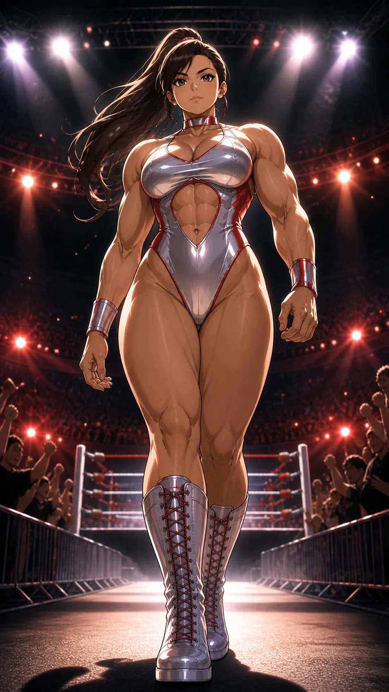

CHARACTER FILE

クイーンクラッシュ
Queen Crush
『優雅に砕け――美しき鉄槌』
基本情報
- 年齢
- 26歳
- 体格
- 175cm・パワフル＆グラマラスなヘビー級体型（筋肉美と圧倒的存在感）
必殺技
【クラッシュエンブレイス】至近距離で抱え込み、肋骨を軋ませるほど締め上げる。そのまま体を回転させ、遠心力を乗せて叩きつける破壊コンボ。
超必殺技
【クラッシング・ドミナンス】 両腕で捕らえ、逃げ場を完全に塞ぐ。 体勢を固定したまま持ち上げ、跳躍。 次の瞬間、全体重を乗せてリングへ叩きつける、支配の一撃。
性格
天真爛漫で明るく前向きな性格。誰とでもすぐ打ち解け、チームのムードメーカーとして場を盛り上げる存在。だがひとたびリングに立てば、その笑顔の奥に秘めた強靭な精神力とパワーが炸裂。自信に満ちた振る舞いと豪快な技で、観客をも味方につける“頼れる姉御肌”。
ファイトスタイル
パワー型・中央制圧型。ほとんど移動せず、接近戦とスロー技を主体に敵を粉砕する。
相性
- 有利な相手
- 軽量高速型（接近すれば粉砕可能）
- 不利な相手
- 極端な間合い管理型・長距離アウトボクサー
プロフィール
リング中央に立つ女王、クイーンクラッシュ。その圧倒的なパワーと威圧感からは想像できないほど、普段は明るく前向きなムードメーカー。 笑顔で敵の攻撃を真正面から受け止め、仲間を励ましながら自ら突き進む姿は、チームの太陽とも言える存在だ。優雅なステップから一転、鋼のような腕力で放たれる「クラッシング・ドミナンス」は、見る者に“支配とはこういうことだ”と知らしめる圧巻のフィニッシュ。 リング外では明るく、リング内では圧倒的。その二面性こそが、彼女を唯一無二の“銀の女王”たらしめている。
口癖
「逃げ場はないよ。」